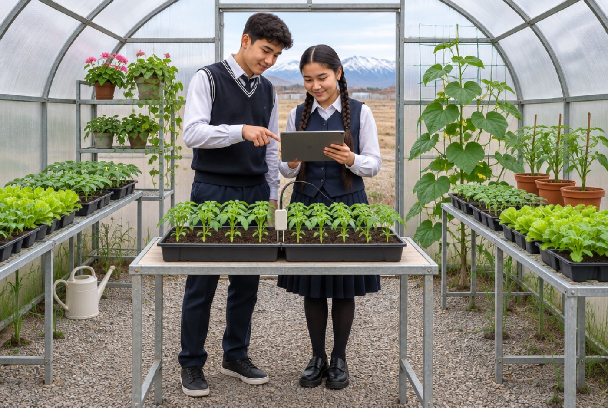
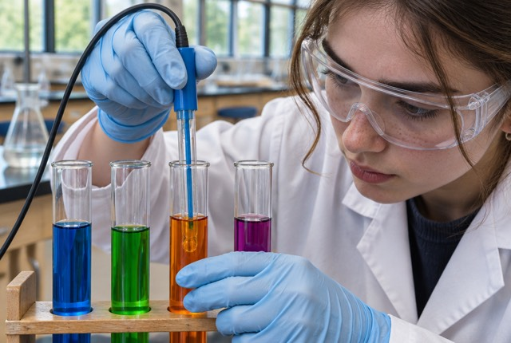

Командаларға көмекПомощь командам
Жобаны сұрақтан бастап тапсыруға дейін қалай дайындау керек. Бұл ұсыныс қана, ресми талаптар Ережеде берілген.Как подготовить проект от вопроса до отправки. Это рекомендации, официальные требования в Положении.

Жақсы зерттеу сұрағыХороший исследовательский вопрос
Сұраққа датчикпен өлшеп жауап беруге болатын болсын: бір нәрсені өзгертесіз, екіншісін өлшейсіз.На вопрос должно быть можно ответить измерением датчиком: одно вы меняете, другое измеряете.
Өлшеу және деректерИзмерения и данные
- Бір өлшеуді кемінде 3 рет қайталаңыз.Повторите одно измерение минимум 3 раза.
- Өзгермейтін жағдайларды жазып қойыңыз: көлем, температура, уақыт.Запишите, что оставалось неизменным: объём, температура, время.
- Кестеде өлшем бірліктері, графикте осьтердің атауы болсын.В таблице укажите единицы измерения, на графике подпишите оси.
- SPARKvue немесе Capstone-дағы бастапқы файлды сақтаңыз, ол өтінімге керек.Сохраните исходный файл SPARKvue или Capstone, он нужен для заявки.
- Күтпеген нәтиже шықса, өшірмеңіз, оны түсіндіріңіз.Если результат неожиданный, не удаляйте его, а объясните.

Жоба паспорты: ұсынылатын құрылымПаспорт проекта: рекомендуемая структура
Тақырып және командаТема и команда
Жоба атауы, бағыт, мүшелер.Название, направление, участники.
Сұрақ және болжамВопрос и гипотеза
Не білгіңіз келеді және не күтесіз.Что хотите узнать и что ожидаете.
ЖабдықОборудование
Қандай PASCO датчиктері және басқа құралдар.Какие датчики PASCO и другие приборы.
ӘдістемеМетодика
Қадамдар: не өзгереді, не өлшенеді, не тұрақты.Шаги: что меняется, что измеряется, что постоянно.
ДеректерДанные
Кесте мен график, өлшем бірліктерімен.Таблица и график с единицами измерения.
Талдау және қорытындыАнализ и вывод
Болжам расталды ма, қай өлшеулер дәлелдейді.Подтвердилась ли гипотеза, какие измерения это доказывают.
ЖИ қолдануИспользование ИИ
Қай құрал, не үшін, нәтиже қалай тексерілді.Какой инструмент, зачем, как проверили результат.
Әр мүшенің үлесіВклад каждого
Кім не істеді.Кто что делал.
Бағалау критерийлерімен салыстырыңызСверьте с критериями оценки →
5 минуттық бейне жоспарыПлан видео до 5 минут
- 0:00–0:30Сұрақ және оның неге маңызды екеніВопрос и почему он важен
- 0:30–2:00Тәжірибе: датчикпен нақты өлшеуді көрсетіңізЭксперимент: покажите реальное измерение датчиком
- 2:00–3:30Деректер: график пен кестені түсіндіріңізДанные: объясните график и таблицу
- 3:30–4:30Қорытынды және ЖИ нәтижесін қалай тексердіңізВывод и как проверили результат ИИ
- 4:30–5:00Кім не істедіКто что делал
Бейне Instagram-да жарияланады, сілтемесі өтінімге қосылады. Сарапшылар көре алуы үшін аккаунт ашық болсын. Қаралым мен лайк бағалауға әсер етпейді.Видео публикуется в Instagram, ссылка добавляется в заявку. Аккаунт должен быть открытым, чтобы эксперты увидели видео. Просмотры и лайки на оценку не влияют.
ЖИ-ді дұрыс қолдануКак правильно использовать ИИ
ЖИ құралдарын шектеусіз қолдануға болады. Бірақ қорытынды нақты өлшеуге сүйенуі керек.Инструментами ИИ можно пользоваться без ограничений. Но вывод должен опираться на реальное измерение.
ПайдалыПолезно
- Идея мен сұрақты талқылауОбсуждать идею и вопрос
- Әдістемені тексертуПроверять методику
- Деректерді талдауға және график салуға көмекПомогать с анализом данных и графиками
- Мәтінді түзетуРедактировать текст
Сақ болыңызЧего избегать
- Деректерді ЖИ-ге ойлап таптыруПросить ИИ придумать данные
- ЖИ қорытындысын бастапқы өлшеумен салыстырмай көшіруКопировать вывод ИИ без сверки с исходными измерениями
- Түсінбейтін мәтінді паспортқа қоюВставлять в паспорт текст, который команда не понимает
Промпттарды сақтаңызСохраняйте промпты
Чатқа ашық сілтеме жасап, оны өтінімдегі «ЖИ-мен сөйлесу сілтемелері» өрісіне қосыңыз. Сарапшылар ЖИ-мен қалай жұмыс істегеніңізді көреді.Сделайте публичную ссылку на чат и добавьте её в поле заявки «Ссылки на переписку с ИИ». Эксперты увидят, как вы работали с ИИ.